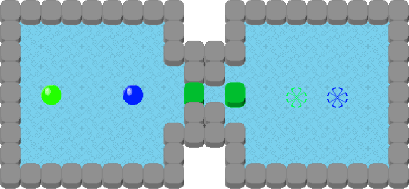
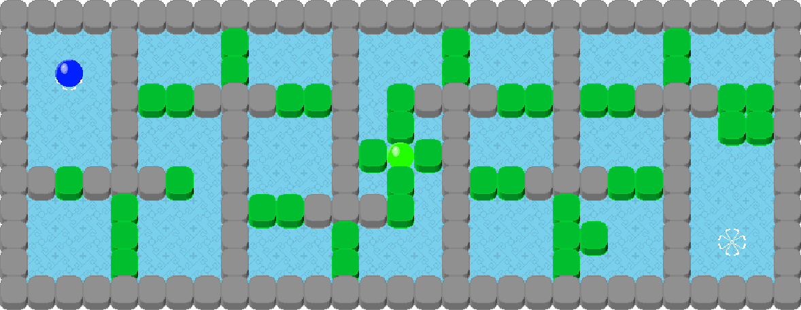

Play the game!
Hall of fame
Here are the only people who were able to finish the game in the first week of its release without any help.Chmielewska Nikola
Księżyk Damian
Zielina Maja
(I am the creator, so no points for me :P )
Did You see the times in the Hall Of Fame?
I am the creator, who knew all the mechanics, designed all the levels and knew all the solutions; and it still took me 40 minutes and 4 repeats...
If nothing else, this should tell You that this game is REALLY HARD! (I get that a lot)
TOC (table of contents)
Motivation
I am an oddball.
I have a lot of interesting ideas and I love to imagine perfect solutions to everything.
Recently, I was thinking of creating the "perfect" RTS game.
Having thought about it for weeks, I was sure to consider everything.
So I got to making it.
And it turns out, I did not have the skills for to make it as I wanted to...
I have tested many approaches, but nothing seemed to work for me.
So I have concluded, that I need to first make something simpler.
Being me, I have decided for a challenge.
Since just making a game (not knowing how to) is too easy (...), why not put a time limit on myself.
Normally people use something like a week, 48 hours or the crazy ones use 24 hours.
So why not 8.
And this is how this project has started! :D
The beginnings
When working on the aforementioned RTS game, I was mostly working with Unity.
But I did not like it (especially the C# language; but I will not voice my critics of it here).
So I figured, why not use something else.
Godot, seems like a good option!
Since it is quite small, runs on Linux by default.
First I needed to learn the Godot language, but that was quick and easy...
Next I needed an idea for the game.
I thought, that a game which I would like to play would be awesome and I love thinking.
What better game to make in 8 hours then a logic one (simple platformer or a shooter would have been easier thou).
So it was decided!
Game idea
Since I already knew that it will be a logic puzzle game and I did not have much time, I figured, that the best idea would be to create a game with simple mechanics and simple graphics, so I could do it quickly and then focus on bughanting and level design.
With this, simple moving blocs with a generically shaped character would be the simplest, as I don't need to animate anything and the mechanics of moving is also simple.
Not the details.
Drawing boxes is simple, but they need to be distinguishable, so rounded corners should solve this problem without needing to draw any special textures.
As for the player, the simplest shape, that does not need animation, and is easily distinguishable from blocks is a ball.
This is going smoothly.
I still don't know, what the purpose of the game will be, but I already have some basics, so I draw them up.
This is the picture with all the graphics that I created in the first iteration. First I have create the gray block, by using an oval square, then moved it 8 pixels down, and connected with couple of vertical lines to have a proper border. Next I colored it gray with just two shades. At this point, I was thinking that some blocks should not be moveable, so I also created the green version by coloring it green. Next I have just drew a circle and filled black. But that looked out of place, so I created an oval light shape in the top right corner. This made it look a bit more 3D like. Then, I started thinking, that just one ball may be boring, so I have just colored it with 4 different colors.
 I have also created a colored square for the floor.
I have also created a colored square for the floor.
This was all the graphics I created for the game (it looks a bit different in the final version, but the idea is the same).
Now for the logic.
I figured that player would move the marbles using arrow keys on a grid.
Each time by one square, but if they would encounter the green box, they would also move the box.
But that would be to simple, so I wanted to add a logic that one marble can move only one block, two can move two, and so on.
With this, when calculating if You can move, I need to add up all the balls and subtract all the boxes.
This gave me an idea, to create a force number for each marble which by default is 1, and if a marble tries to move another, then it transfers its force forward, but the block uses up the force.
With this my mind wondered what if a block would have more than 0 force at the end...
Then it should move more blocks!
But what if I would have a marble, with more then 1 force at the end?
It obviously should move more squares.
But then it hit me.
Since it is a ball, it should not have much friction (unlike boxes), so it should roll as far as possible.
With this I figured I should emulate Newton's Cradle in some simple form.
Now only the goal of the game remains...
Since I have already used up something like 1 hour of my time, I thought of something simple.
The marbles should just land in the corresponding colored circle (so I also quickly draw it up).
Since I also love speed running, I decided to make the game have 25 levels without the ability to redo Your moves, so making mistakes will cost You.
Thus the score You get is the time and the number of restarts.
Lets start "coding"
With everything set up, I've created a new project in Godot.
I did not know what to do.
Looking at the clock, I figured, I really need to do something.
So I have created a basic Godot scene for an entities (both marbles and block). The idea being that it should have all the logic of its movement and graphics.
It got a simple logic for the initial position so it fits the grid perfectly and that the z-index for drawing is correctly assigned depending on its position.
With this as a base, I have created 4 marbles and 1 block (the green one) as entities, by simply adding an image and a type.
Next I have created the tile map for setting up a map.
It is created as 3 basic tilemap components in Godot and a list of standalone walls.
There is a floor tile map (with just one tile), offset by half a tile to the left and up, so it ends in the middle of the walls (this makes it, so the player does not see the edges of the floor).
Next there is a tile map of border walls, with 2 types of tiles; one for the back wall with z-index of -1 and the other for fron walls with index of 1000 (this way it always looks pseudo 3D).
Then there is a tile map for end points.
And finally, with the same positioning as with entities, there are wall entities, that can be placed freely (with z-index corresponding to their position).
Everything topped up with a couple of functions to check if at a position (x,y) is a wall or a target.
With this I have made the first level, and used it for testing everything else.
After creating the first level, I went into the project settings, and set the screen size, so it contains exactly 40 by 25 blocks.
And here came the problems...
I've created a simple script for managing the user inputs.
It first made an array of all the marbles, all the movable blocks and combined them into a list of all entities.
Next in the main game loop, I check if any useful key is pressed, and derived direction from it.
That was simple
And then I needed to calculate what should move where...
And I did not know how to do it...
So I have started by simply moving the marbles without considering blocks.
This worked, but I still didn't know how to account for the blocks.
So before moving I set the target of the marble and check if there is something.
With this, I assumed, that we are also trying to move the targeted object, so we do the same for them.
No if we just remember what are targeting and what is targeting us, we will create chains of movements.
So we just need to check what is in it and the job done right? :D
Well, no...
Here I needed to check what is the first entity in the chain, then follow the chain and account for different elements in it.
I spend 2 hours working out how to do it properly and settled on a recursive algorithm, with state machine for each entity.
This is by no means a perfect approach but I did not have a lot of time (just 2 hours left).
With this I had a working game.
But it had just one level.
So I made, a couple and with this I finished the 8 hour time limit.
I have launched the game and played it.
But it did not work correctly.
The marbles didn't want to bounce of each other properly (somewhat random) and the blocks did not move properly, not to mention the wired bug with marbles stopping half way.
Thus it was a FAILURE!!!
Bugfixing
I have spent next 6 hours (for 14 hours in total), fixing these bugs...
It turns out, that I needed to keep track of a couple more state parameters and at a very specific state combination, the calculation did not propagate along the chain of influence...
I have rewritten the code 5 times (I like the idea of coding with replacing instead of fixing).
But it finally worked!
And surprisingly, nobody has found any bugs since!
The UI
This was the simplest thing to do, as I just slammed some text into the game window.
I found a nice font (joystix monospace)
I measured it, so it would take exactly 2 grid spaces on the top.
I added a fade screen.
And made state machine to control the whole game (I replaced the standard _process function from the levels with process; this way I am controlling when the player has actual control).
The level design
This is actually the biggest part of the game, that took the second half of my time spent creating this game.
Each level is in some way unique and serve a specific purpose, culminating in the final level.
Level 1
Level 1 is just a level, where player test how to move and sees that he needs to get the marble into the target circle.
Level 2

Level 2 shows player that he needs to be precise, and is a good test ground to practice.
Level 3
Level 3 teaches how to move blocks.
Level 4
Level 4 shows that You cannot move two blocks with one marble, so You need to move one out of the way.
There is a risk that somebody will do this without falling for the trap, but then he will fall for it in other levels.
Level 5

Level 5 this level forces a player to move two blocks with two marbles.
Also, if for some reason player did not notice, that moving 2 blocks with one marble is impossible, I hope that here he will notice.
Additionally, in this level, most players will see that marbles can launch each other.
Level 6
Level 6 has the same structure as the level 2.
It shows that, different color marbles need to go to their respective color targets.
Also it teaches blocking the marbles, and more interesting movement patterns.
Level 7

Level 7 has the same structure as the level 2 and level 6.
It was added as one of the last levels to show how white targets work and to force players to practice complex movement patterns.
Level 8
Level 8 is the first level that I loved.
The main idea is to teach the player how to arrange marbles in the complex situations.
If You notice, You just need to move each marble one square to the center.
But this is tricky since, they always move in the same direction... unless blocked!
So if You notice some empty lines to the border, You can just go to one, and try going even further.
With this, two of them will stay in place, and the rest will move closer.
Do it with the other wall and job done!
Level 9
Level 9 is a level focusing on controlling the marbles.
It can be a bit tricky since You need to rotate them with the gray boxes in a symmetric pattern.
Thus it teaches the player to manipulate the green boxes to help position the marbles.
Level 10
Level 10 has 2 main ideas behind it.
First You need to not get stack on the first block; this shows how to remove certain blocks.
And then You need to find the target under one of the green boxes.
Level 11
Level 11 takes what You have learned in all the previous 10 introductory levels, and checks if You can actually use it in more complex situation.
Also it test how good is You set up for the end if You want to do it quick.
Level 12
Level 12 is just a breather. The is not much going on, so You can take a break.
In the mean time, the only way to pass this level is, to learn marble launching.
Level 13
Level 13 is now a hardcore level after the easy one.
There are two ways of passing it.
The easy one being, to collect all the marbles together and clear the center.
And the other, much faster, is to create small opening to the targets, and then squeeze Your way thru (no recommended, unless You are speed running).
Level 14

Level 14 is the introductory level into squeezing.
Here just getting to the end is not that hard (thou You can get stack).
The most important thing is to have a good setup at the end, so You can push the blockade and also to not block the final entrance (here it is actually harder to block the targets then to not block them).
Level 15
The idea behind level 15 design, wast to have two marbles in different environments.
Thus while trying to get out one, means blocking of the other.
In reality, it is hard to block Yourself...
Level 16
Level 16 is a deceiving level.
It seams that the main problem is getting marbles to the other side.
But in truth, the main idea is that You cannot finish the level, without blocking one of them together with its target.
Level 17
Level 17 is just a harder version of level 10.
Level 18
Level 18 is a level with interesting entrance.
It is deceptive, as there is a super easy way of entering by pushing in the blocks right next to the center one, but most people will try something much harder (often not working).
Level 19

Level 19 is a more interesting version of level 14, mixed with the idea of level 16 and a need to go back.
So You need to first rescue the green marble.
Then block it at the end.
All the while, not blocking Your way back.
Level 20
Level 20 is just a more complex version of level 15.
Level 21
The level 21 is arguably the most difficult level in the whole game...
It was not intentional, since I did it with simple goal in mind.
The goal was to force the player to block of multiple marbles at their targets before maneuvering the others.
Remember to leave some space for moving, so You can move all of the marbles in the same direction to finish the level.
Level 22
Level 22 is a simple level, where You need to rotate the configuration of the marbles.
Here You will learn, that to do this, You need to first offset them, so they are on different lines.
Level 23
Level 23 is the hardest version of the level 14 and level 19.
Here You need to squeeze Your way at the last cross, and have a good set up for the end block.
It shows, that like in the level 10, level 17 and level 18, You sometimes need to take blocks out to be able to get somewhere.
Level 24
Level 24 is like level 22, but here You need to rotate the configuration of the two green blocks, to switch between moving horizontally and vertically.
Level 25
Level 25 is the last level of the game, where You need to use everything You have learned before.
The main idea is, that You will not be able to simultaneously move all the marbles into the required spots.
So You need to trap them there.